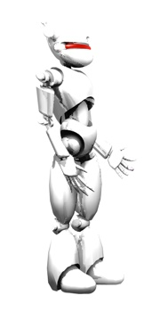

|

|
Stránka filiph.net se pøipravuje. Kontakt: filip.hracek@gmail.com.
Working days and nights on filiph.net. Under heavy construction. Contact me: filip.hracek@gmail.com.
Video:
dont be light.avi (15MB DivX) – videoklip ke skladbì Don't Be Light od skupiny Air / seminární práce do pøedmìtu Davida Koøínka Vizuální prostøedky digitálního média
chceme tì.avi (17MB DivX) – propagandistický film katedry žurnalistiky FSS MU
be consume.avi (5MB DivX) – seminární práce do pøedmìtu Davida Možného Postprodukce a digitální efekty
|
|